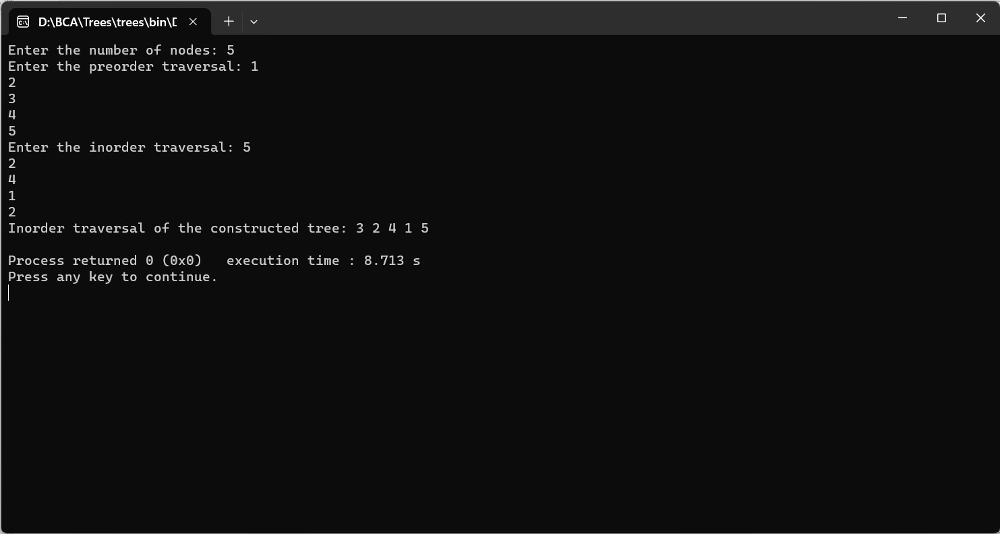

CONSTRUCT BINARY TREE FROM PREORDER AND INORDER TRAVERSAL
#include
#include
struct Node {
char data;
struct Node* left;
struct Node* right;
};
int search(char arr[], int start, int end, char value) {
for (int i = start; i <= end; i++) {
if (arr[i] == value) {
return i;
}
}
return -1;
}
struct Node* buildTree(char preorder[], char inorder[], int inStart, int inEnd, int preIndex) {
if (inStart > inEnd) {
return NULL;
}
struct Node* newNode = (struct Node*)malloc(sizeof(struct Node));
newNode->data = preorder[preIndex];
newNode->left = newNode->right = NULL;
if (inStart == inEnd) {
return newNode;
}
int inIndex = search(inorder, inStart, inEnd, newNode->data);
newNode->left = buildTree(preorder, inorder, inStart, inIndex - 1, preIndex + 1);
newNode->right = buildTree(preorder, inorder, inIndex + 1, inEnd, preIndex + inIndex - inStart + 1);
return newNode;
}
void inorderTraversal(struct Node* root) {
if (root == NULL) {
return;
}
inorderTraversal(root->left);
printf("%c ", root->data);
inorderTraversal(root->right);
}
int main() {
int size;
printf("Enter the number of nodes: ");
scanf("%d", &size);
char preorder[size], inorder[size];
printf("Enter the preorder traversal: ");
for (int i = 0; i < size; i++) {
scanf(" %c", &preorder[i]);
}
printf("Enter the inorder traversal: ");
for (int i = 0; i < size; i++) {
scanf(" %c", &inorder[i]);
}
struct Node* root = buildTree(preorder, inorder, 0, size - 1, 0);
printf("Inorder traversal of the constructed tree: ");
inorderTraversal(root);
printf("\n");
return 0;
}
